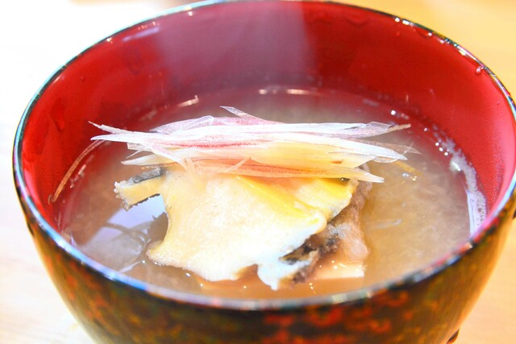
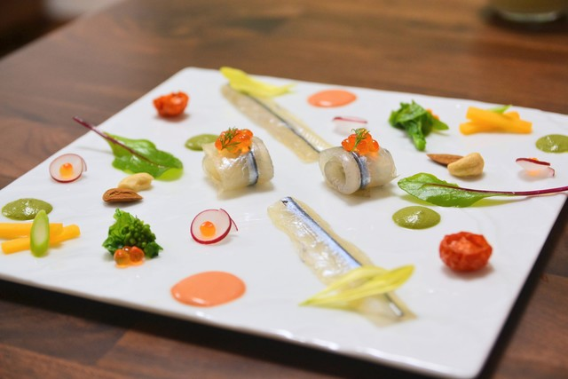
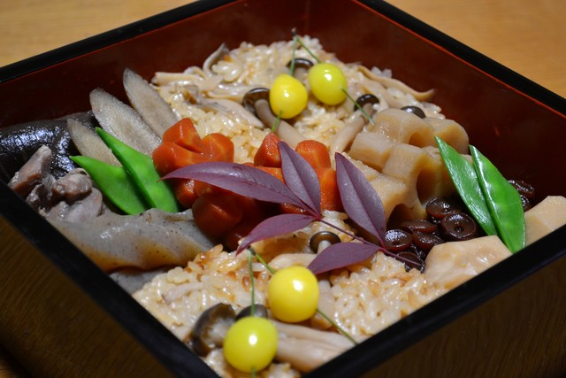

おせち（2019/12）
カンパーニュとバゲット、安定してきたよ（2019/11）
子持ち鮎の甘露煮（2019/10）
夏懐石（2019/8）



冬瓜と天豆の摺り流し（2019/6）
春懐石（2019/5）
ひなまつり（2019/3）
すてきな和皿をいただきました（2019/1）
おせち（2018/12）
握り寿司を修行中（2018/10）
引き続きドイツパンを修行中（2018/9）

懐石（2018/8）


精進料理（2017/12）
クリスマス（2017/12）

秋の曲げわっぱ弁当（2017/10）
いただいた小鉢に秋の料理を（2017/9）
懐石（2017/8）

いちごのデザートプレート（2017/3）

ひなまつり（2017/3）

2017年おせち（2016/12）
クリスマス（2016/12）
ドイツのライ麦パン修行中（2016/9）
半年熟成の自家製信州味噌（2016/9）
懐石（2016/8）
お皿をいただいたので盛ってみた^^（2016/4）
花のババロアをまねしてみた（2016/3）
ひなまつり（2016/3）
2016年おせち（2015/12）


クリスマス（2015/12）

ピノキオの厚焼きパンケーキをまねしてみた（2015/10）
懐石（2015/8）
お皿をいただいたので盛ってみた^^（2015/5）
手打讃岐うどん（2015/4）
フルーツバスケット（2015/3）
2015年おせち（2014/12）
バゲット修行中（2014/8）
懐石（2014/8）
イワタコーヒーの厚焼きパンケーキをまねてみた（2014/3）

2014年おせち（2013/12）